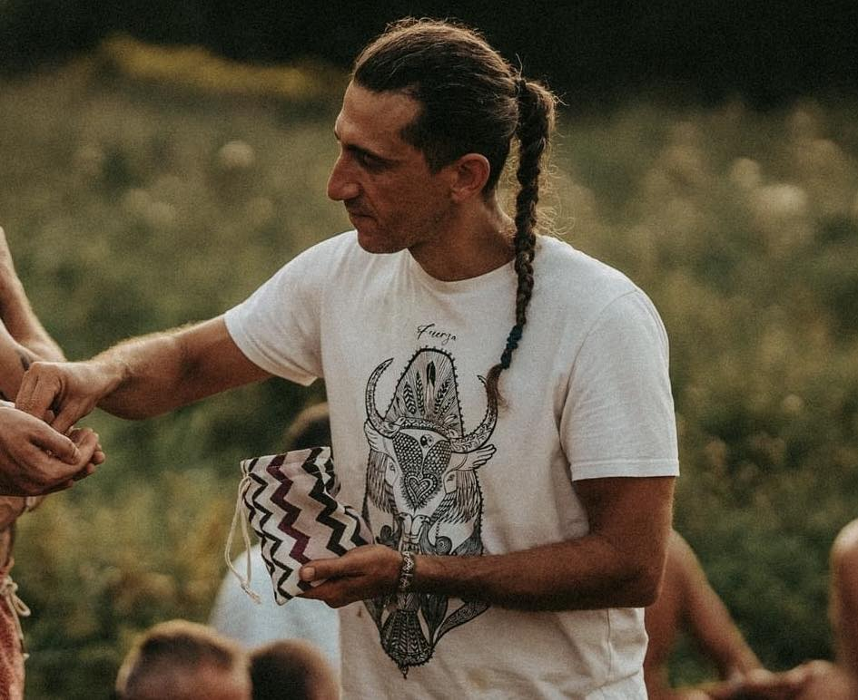
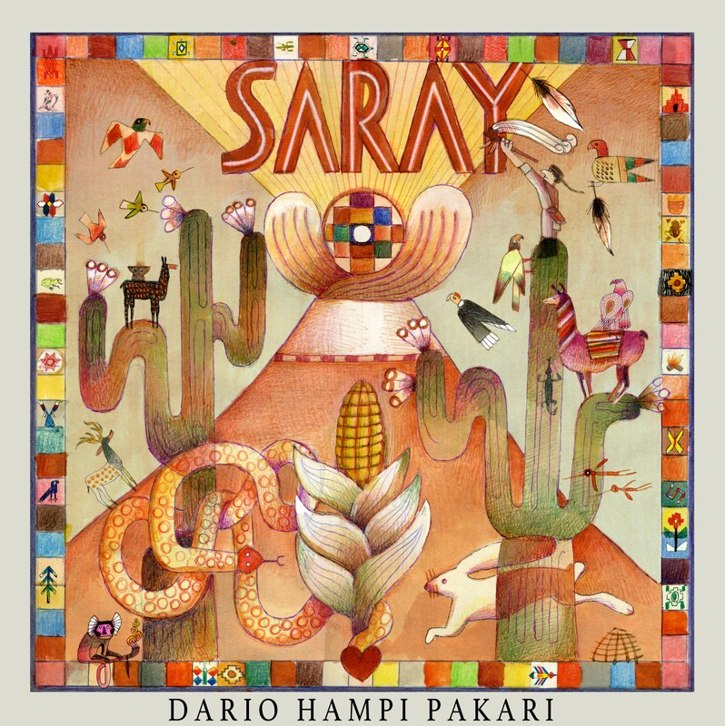

Psychologist · Medicine Man · IFS Practitioner
I am a psychologist, a trained IFS Practitioner, and a Kuraka of the Sumak Kawsay tradition. I work with people who are ready to remember who they are.

Who I Am
"I do this so people can remember their purpose. That is the whole of it."
I grew up between cultures and have spent twenty years learning from both. Psychology gave me the language of the inner world. The Sumak Kawsay tradition gave me the practice of living inside it.
I trained at Sapienza University in Rome. I spent years in Latin America with communities navigating loss, transition, and rupture. I have guided sacred rituals across Europe and the Americas for two decades. I co-founded Fuoco Sacro in Italy and Sumak Kawsay Foundation in Florida, US.
I also created FINO with my wife Anna, bringing Self-leadership into organizations and leadership teams.
I speak English, Spanish, Italian, and Portuguese.
The work looks different for each person. The direction is always the same: back to your Self.
Individual
Something in you knows it is time. Maybe you are in the middle of a rupture. Maybe you have been in therapy before and want something that goes further. Maybe you simply feel disconnected from yourself and don't know how to find your way back.
Sessions work with the inner system using IFS, psychology, and the tools of twenty years of practice.
Couple
Couples come when they feel the distance growing, when something broke and they want to understand it, or when one or both of them are doing deep inner work and want to do it together.
This is not conflict management. It is an invitation to know each other more honestly, and to grow in the same direction.
Group
Circles, vision quests, and multi-day retreats. The group format is not incidental. Being witnessed by others who are doing the same work changes what becomes possible.
These experiences draw on psychology, IFS, and twenty years of practice. The community that forms is part of what you take with you.

Medicine Music
Release on all platforms: Summer Solstice · June 21, 2026
In 2005 I sat in ceremony for the first time in Ecuador. A song came. Then another. They have been coming ever since.
Twenty years later, SARAY gathers them. Songs received in fire, in silence, in the presence of the tradition. This album is a gift to the community. It releases on the Summer Solstice and we will listen together for the first time.
This work lives and breathes in community. For twenty years I have built and led communities rooted in ancestral knowledge and collective healing.
President · Co-Founder
Fuoco Sacro
Preserving and sharing the sacred practices of Earth traditions across Europe and the Americas.
fuocosacro.org →Kuraka
Sumak Kawsay · Iglesia del Buen Vivir
A living church rooted in the wisdom of Sumak Kawsay, the ancient art of living well.
sumakawsay.org →Secretary
FERM · Red Micelio Federation
An international federation connecting communities through ethical stewardship of ancestral knowledge.
redmicelio.org →